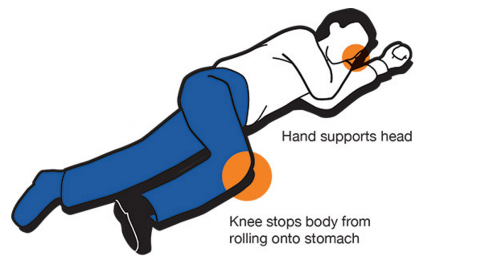

If the victim is not experiencing any of the symptoms listed but you are still worried, it is a good idea to have the victim
seen by a medical professional. Call 911 is you are concerned about the victim and have them seen. They may not be experiencing
an overdose now, but they may be progressing to one. Keep an eye out for signs and symptoms of an overdose by monotoring the victim.
Here are some ways to help someone who is experiencing an any overdose:
• Put the victim in Recover Position.
• If they vommit, wipe and clean their mouth so they don't choke or inhale the vommit.
• Do not put the victim in a cold shower, it may put them in shock.
Recovery Position
Turn the victim on their side so they do not choke or inhale vomit.

If you believe the victim has become unconscious, click here.